9. Managing Capacity With Instances
Open Automation Execution > Infrastructure > Instances to inspect controller instances and register external execution or hop nodes. Registering a node creates its controller record; it does not install or configure the remote machine. The node is outside the Kubernetes cluster and is provisioned separately with its install bundle. Scale controller pods through the KoiosPlatform, not by creating control instances in this form.
Note
In Koios Automation Platform, jobs run by default in the default container group, inside the
cluster, and no mesh is needed. Validated in Koios: execution nodes outside the cluster on
Kubernetes (Rocky Linux 9 and Debian 13, see Preparing the node) and on OpenShift (Rocky
Linux 9), the default execution environment from a private registry, and the mesh ingress on OpenShift. A separate hop node outside
the cluster has not been tested yet. The Koios operator installs the AWXMeshIngress resource type
and reconciles the mesh ingresses you create.
Instances serve as nodes in your mesh topology. Automation mesh allows you to extend the footprint of your automation. Where you launch a job and where the ansible-playbook runs can be in different locations.
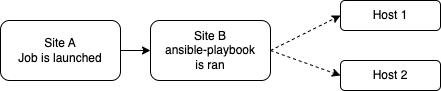
Automation mesh is useful for:
traversing difficult network topologies
bringing execution capabilities (the machine running
ansible-playbook) closer to your target hosts
The nodes (control, hop, and execution instances) are interconnected via receptor, forming a virtual mesh.
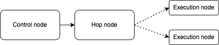
9.1. Prerequisites
A Red Hat family (RHEL 9 and compatible) or Debian operating system, prepared as described in Preparing the node. Bring a machine online with that OS. Use a stable IP address or DNS hostname. Name resolution and connectivity must work in the direction of each peer connection. If control nodes connect directly to this machine, they must be able to reach its listener port (for example, 27199). A node using mesh ingress can instead initiate the connection towards the cluster.
In general, the more CPU cores and memory the machine has, the more jobs that can be scheduled to run on that machine at once. See Automation controller Capacity Determination and Job Impact for more information on capacity.
The system that is going to run the install bundle to setup the remote node requires the collection
ansible.receptorto be installed:If machine has access to the internet:
ansible-galaxy collection install -r requirements.ymlInstalling the receptor collection dependency from the
requirements.ymlfile will consistently retrieve the receptor version specified there, as well as any other collection dependencies that may be needed in the future.If machine does not have access to the internet, refer to Downloading a collection for offline use.
Use a platform administrator account with controller system administrator permissions to create, edit or remove instances. System auditors can inspect instances and existing health-check results; starting a health check requires controller system administrator permission. Auditor access does not grant permission to change instances.
The execution environment that jobs use on the node must be pullable from it. Images in a private registry, such as the default execution environment of Koios Automation Platform, need a Container Registry credential on the execution environment: an external node pulls with Podman and uses the credential of the execution environment rather than the cluster namespace’s pull secrets (see Using a private image for the default EE).
9.1.1. Preparing the node
Execution nodes have been validated in Koios with Rocky Linux 9 and Debian 13. The preparation below applies only to the external execution machine, not to a controller host or cluster node. Run provisioning from a separate administration environment with the required Ansible tools and privileges. Each adjustment below is shown with the error it avoids.
Primary group of the receptor user (bundles from before 2026.11.6). Since 2026.11.6 the bundle
gives the awx user its own awx primary group, and nothing needs to be done. Bundles downloaded
from older releases created the user without naming its group, and it could end up with another
primary group (users on both Rocky Linux 9 and Debian 13); rootless podman then fails in every job
with newuidmap: Target process is owned by a different user. On a node installed with such a bundle,
download the bundle again and run it, or check it with id awx and, if the primary group is not
awx, fix it with receptor stopped:
sudo systemctl stop receptor
sudo usermod -g awx awx
sudo -u awx -H podman system migrate
sudo systemctl start receptor
On Debian (validated with Debian 13; other releases are expected to need the same, but have not been tested), the install bundle and the way jobs run on a node, written for the Red Hat family, also need the following.
Python packages from pip. The bundle installs ansible-runner and receptorctl with the
system pip3, which Debian blocks (error: externally-managed-environment). Allow it only while the
bundle runs: if /etc/pip.conf does not exist yet, create it before running the bundle, and remove
it afterwards (repeat this whenever you run the bundle again):
printf '[global]\nbreak-system-packages = true\n' | sudo tee /etc/pip.conf
# ... run the install bundle ...
sudo rm /etc/pip.conf
CA trust paths. The Paths to expose to isolated jobs setting (AWX_ISOLATION_SHOW_PATHS,
under Settings > Automation Execution > Job) can expose the execution host’s /etc/pki/ca-trust and
/usr/share/pki to the execution environment of jobs that run on external nodes, when those paths are configured. Those paths do not exist on Debian, and jobs
fail with mounting overlay failed “/etc/pki/ca-trust”. There are two ways out:
If the execution environment carries the certificate authorities your jobs need, remove those two paths from the setting. This is a change for every node of the controller, so check it against the other nodes.
To keep using the node’s certificate authorities, recreate the Red Hat layout with Debian’s bundle (do not create the directories empty: they would hide the execution environment’s own certificate authorities):
sudo install -d -m 0755 /etc/pki/ca-trust/extracted/pem /etc/pki/ca-trust/extracted/openssl /usr/share/pki sudo install -m 0644 /etc/ssl/certs/ca-certificates.crt /etc/pki/ca-trust/extracted/pem/tls-ca-bundle.pem sudo install -m 0644 /etc/ssl/certs/ca-certificates.crt /etc/pki/ca-trust/extracted/openssl/ca-bundle.trust.crt
Repeat the copies after
update-ca-certificateswhen you add certificate authorities to the node.
9.2. Common topologies
Instances make up the network of devices that communicate with one another. They are the building blocks of an automation mesh. These building blocks serve as nodes in a mesh topology. There are several kinds of instances:
Node Type |
Description |
|---|---|
Control |
Nodes that run persistent automation controller services, and delegate jobs to hybrid and execution nodes |
Hybrid |
Nodes that run persistent automation controller services and execute jobs (not applicable to operator-based installations) |
Hop |
Used for relaying across the mesh only |
Execution |
Nodes that run jobs delivered from control nodes (jobs submitted from the user’s Ansible automation) |
9.2.1. Simple topology
One of the ways to expand job capacity is to create a standalone execution node that can be added to run alongside the Kubernetes deployment of automation controller. These machines will not be a part of the automation controller Kubernetes cluster. The control nodes running in the cluster will connect and submit work to these machines via Receptor. The machines are registered in automation controller as type “execution” instances, meaning they will only be used to run automation controller jobs, not dispatch work or handle web requests as control nodes do.
Hop nodes can be added to sit between the control plane of automation controller and standalone execution nodes. These machines will not be a part of the automation controller Kubernetes cluster and they will be registered in automation controller as node type “hop”, meaning they will only handle inbound and outbound traffic for otherwise unreachable nodes in a different or more strict network.
Below is an example of an automation controller task pod with two execution nodes. Traffic to execution node 2 flows through a hop node that is setup between it and the control plane.
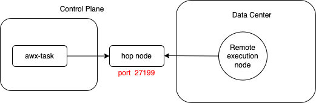
Below are sample values used to configure each node in a simple topology:
Instance type |
Hostname |
Listener port |
Peers from control nodes |
Peers |
|---|---|---|---|---|
Control plane |
awx-task-65d6d96987-mgn9j |
n/a |
n/a |
[hop node] |
Hop node |
awx-hop-node |
27199 |
True |
[] |
Execution node |
awx-example.com |
n/a |
False |
[hop node] |
9.2.2. Mesh topology
Mesh ingress is a feature that allows remote nodes to connect inbound to the control plane. This is especially useful when creating remote nodes in restricted networking environments that disallow inbound traffic.
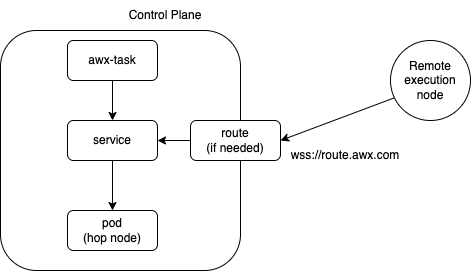
Below are sample values used to configure each node in a mesh ingress topology:
Instance type |
Hostname |
Listener port |
Peers from control nodes |
Peers |
|---|---|---|---|---|
Control plane |
awx-task-65d6d96987-mgn9j |
n/a |
n/a |
[hop node] |
Hop node |
awx-mesh-ingress-1 |
27199 |
True |
[] |
Execution node |
awx-example.com |
n/a |
False |
[hop node] |
To create the mesh ingress, create an AWXMeshIngress resource in the namespace of the platform. The
Koios operator installs its type and reconciles it. deployment_name is the controller of the
platform (<platform>-controller); on OpenShift, ingress_type: route publishes it through a
passthrough Route on port 443:
kubectl apply -n koios -f - <<'EOF'
apiVersion: awx.ansible.com/v1alpha1
kind: AWXMeshIngress
metadata:
name: koios-mesh
spec:
deployment_name: koios-controller
ingress_type: route
EOF
The controller registers the mesh ingress as a hop node with the external address of the Route. To use it from a node:
Make sure the node resolves the Route’s host name (
kubectl get route -n koios koios-mesh -o jsonpath='{.spec.host}'). Nodes outside the cluster often use a public DNS that does not know the cluster’s domain.Edit the external instance and clear Peers from control nodes. On its Peers tab, use Associate peers to select the mesh ingress listener address, so the node connects inbound and no control node tries to reach it.
Download the node’s install bundle again and run it (see Add an instance).
For other options, see Mesh Ingress in the upstream AWX Operator documentation. Then add the node to an instance group, as with any execution node. Whatever execution environment image is used to run a playbook must be pullable from the node (see Using a private image for the default EE), and everything the playbook uses must be reachable from it.

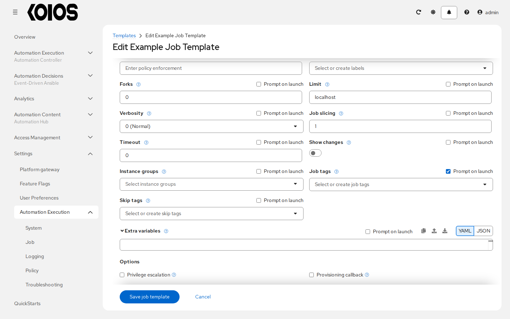
9.3. Add an instance
To register an external execution or hop node:
Open Automation Execution > Infrastructure > Instances and click Create instance.
Set Host name to the node’s resolvable hostname or IP address. Choose Execution or Hop in Instance type. These values cannot be changed after creation.
Set Listener port when the node will accept inbound Receptor connections. Select Peers from control nodes only when control nodes should initiate connections to this listener; a listener port is required for that option.
Under Options, select Enable instance to allow execution jobs and Managed by policy to allow automatic instance-group membership. Instance state is read-only and initially
installed. Associate outbound peers after creating the instance.

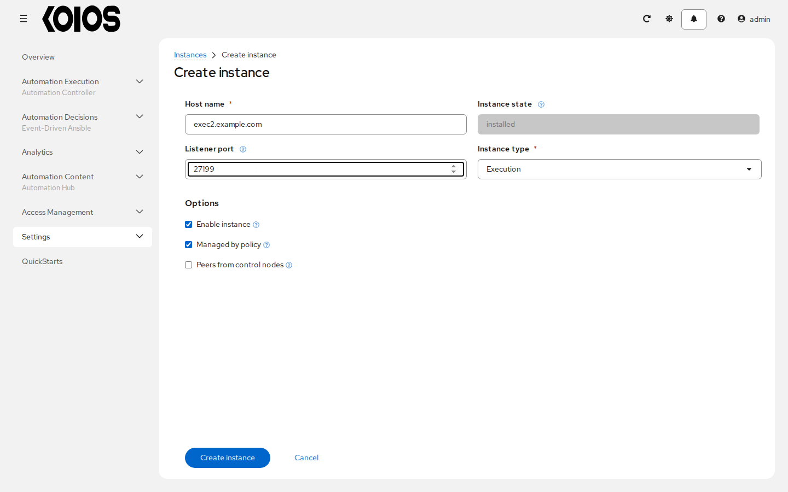
Click Create instance. The Details tab opens. For existing instances, use Edit instance and Save instance for permitted changes. Managed control instances are maintained by the operator and cannot be deprovisioned through this workflow.

If outbound peering is required, configure the instance’s Peers tab as described below before downloading its bundle.
On Details, use the download control in Download bundle. The bundle contains private node keys as well as certificates, Receptor configuration and the installation playbook. Keep it private and do not attach it to issues or documentation.

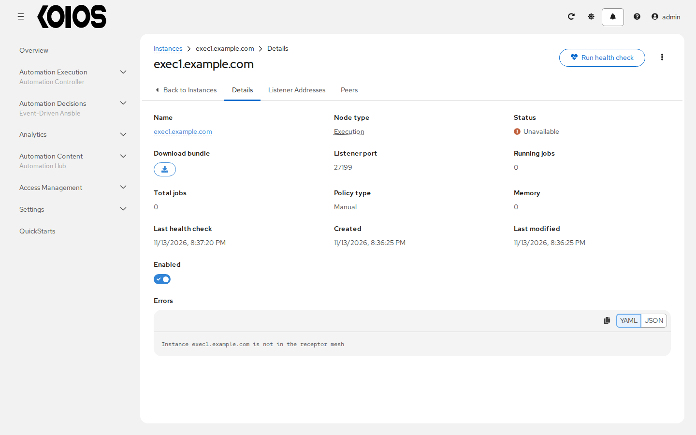
Extract the bundle in a private working directory on a separate administration machine with access to the external node. Install its declared collection dependencies there:
ansible-galaxy collection install -r requirements.yml
Set
ansible_userandansible_ssh_private_key_filein the bundle’sinventory.ymlfor the account that provisions the remote node. The supplied inventory already setsansible_hostto the registered hostname. These SSH credentials are for provisioning the external machine; they are not credentials for logging in to the platform.Run the bundle from that administration environment:
ansible-playbook -i inventory.yml install_receptor.yml
The playbook uses privilege escalation on the remote node. It creates the Receptor account and configures Receptor; execution nodes also need Podman and Ansible Runner. Review the downloaded requirements.yml and playbook before applying them. See Preparing the node for the documented node preparation requirements.
Note
Running a bundle again does not replace the node’s certificates if they already exist. When moving a node to another controller or rotating its certificates, download the appropriate bundle and use -e receptor_replace_tls=true. Otherwise, the existing certificates may still be signed by the previous controller’s CA and fail validation.
For an execution node, use Run health check and wait for the asynchronous result. Verify that the instance is ready, enabled and assigned to the instance group your job template uses before launching a job there. A hop node routes traffic and does not provide execution capacity.
9.3.1. Outbound peers
Open the instance’s Peers tab to inspect its outbound peer addresses.

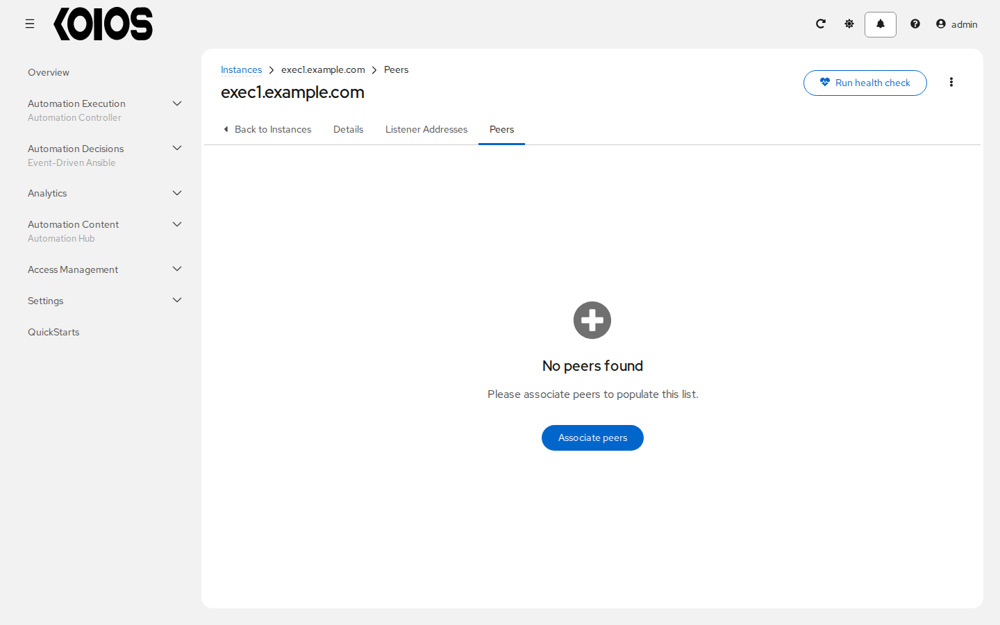
Click Associate peers, select eligible listener addresses and confirm the selection. To remove associations, select rows and use Disassociate peers. Each association selects a Receptor listener address.

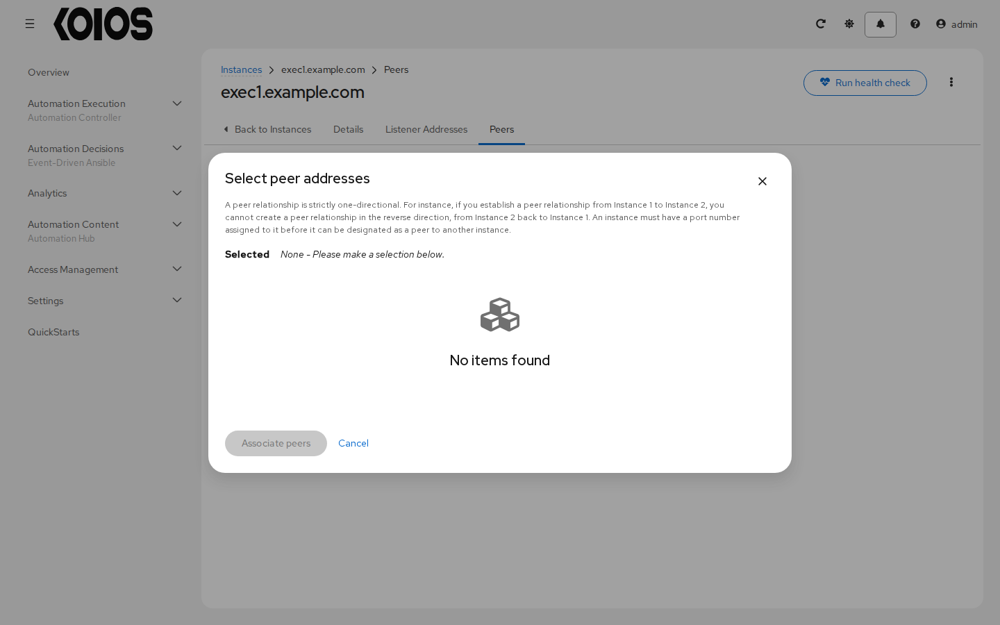
The controller rejects self-peering, duplicate peers on one instance and a direct reverse peer relationship. Select the direction that matches network reachability. Hop-to-hop connections are not categorically prohibited. Peers from control nodes controls automatic inbound peering from control nodes and is separate from this outbound list.
After changing a remote node’s peers or listener configuration, download its updated bundle and run it again to apply the configuration on that machine. Changing the controller record alone does not reconfigure remote Receptor. For a graphical view, see Topology Viewer.
9.4. Manage instances
The Instances list under Automation Execution > Infrastructure > Instances supports filtering, sorting and selecting instances for actions.

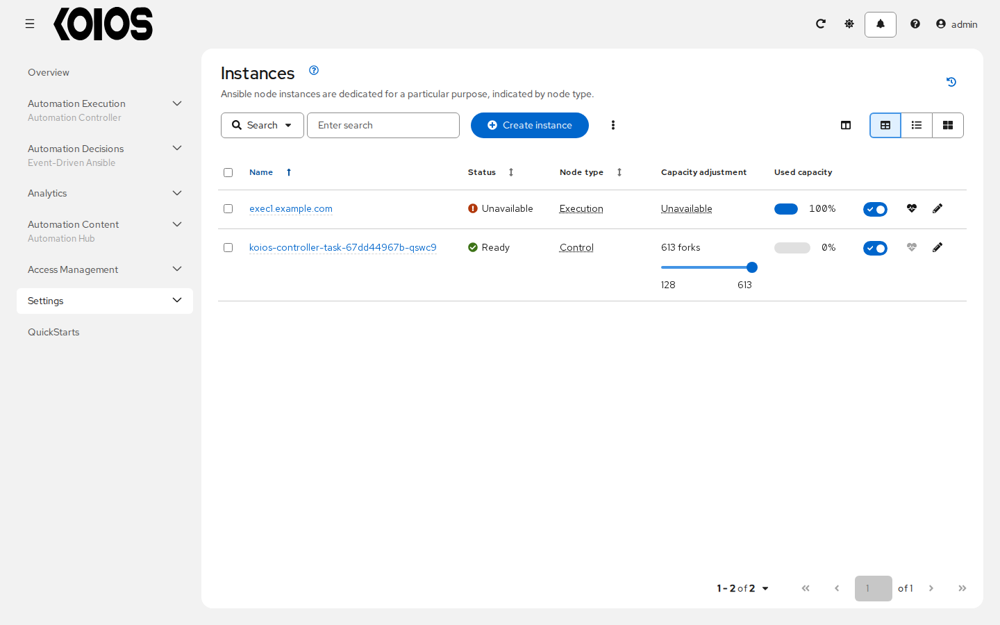
Open an instance’s Details to inspect Node type, Status, Instance groups, Used capacity, Running jobs, Memory, Last health check, Forks, Enabled and any Errors. Fields vary by node type. The Forks control adjusts capacity_adjustment; it is not a live CPU utilization limit. See Improving Automation Controller Performance.
9.4.1. Instance states
installed: the instance is registered but has not yet completed a successful health check. Registration does not prove that the bundle has been run.ready: the instance has reported usable health data. An execution instance must also be enabled and have capacity for a job to run.unavailable: the instance is offline or its health check reported a problem; inspect Errors.deprovisioning: removal has been requested and the controller is draining work before deleting the record.
The model also has provisioning and failure states for lifecycle operations. They do not mean this UI automatically provisions a newly registered remote machine. While an execution-node health check is pending, the UI shows a running status indicator.
9.4.2. Remove an external instance
Disable the instance first if you want to stop assigning new jobs while reviewing removal. Select the external instance and use Remove instance, review the confirmation, then click Remove instance to request deprovisioning. The controller waits for its running or waiting jobs before deleting the instance record.

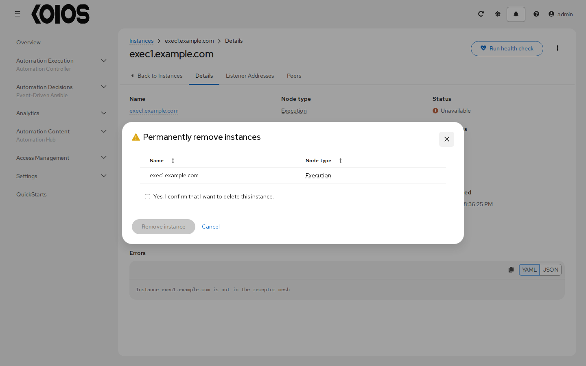
Removal does not uninstall software or erase keys on the external machine. Review the remaining topology and rerun affected remote nodes’ bundles when peer configuration changes. Do not remove or recreate managed control instances to scale the controller; use the operator.
9.4.3. Execution-node health checks
Use Run health check from the execution instance’s row or details actions. The API queues the check asynchronously; accepting the request does not mean the node passed. Checks are supported for execution nodes, not hop nodes.

Refresh the page to inspect Last health check, Status and Errors after the task finishes. A pending check temporarily disables another check request.
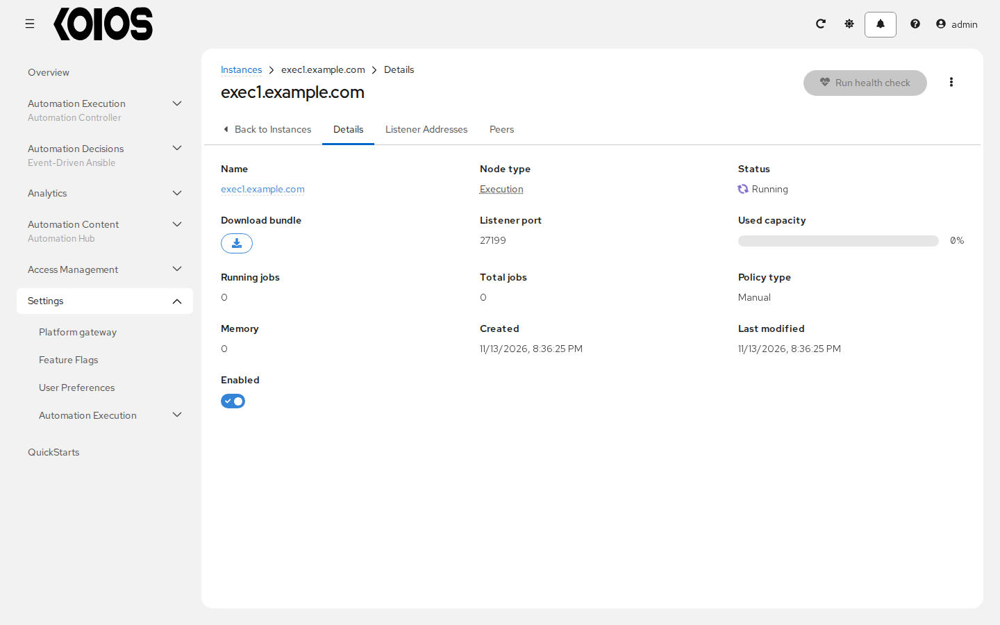
For connectivity errors, inspect DNS, the chosen listener and peer direction, certificate trust and the external node’s Receptor service. The topology view can help locate the affected connection:

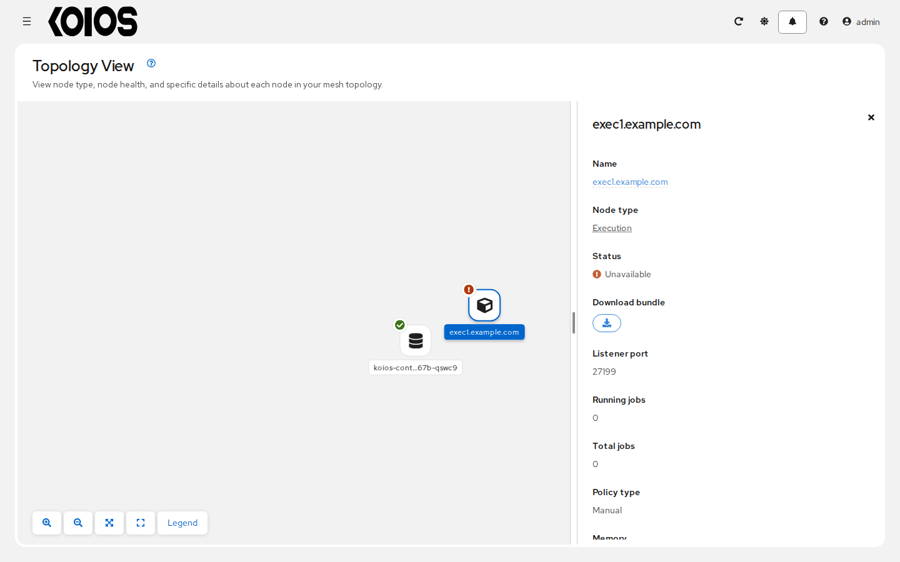
9.5. Using a custom Receptor CA
Set the fields described in Custom Receptor CA (upstream AWX Operator documentation) under spec.controller of the KoiosPlatform.
9.6. Using a private image for the default EE
An external node pulls the image of the execution environment with podman, using only the credential of the execution environment. For
an image in a private registry, such as ghcr.io/koiosplatform/koios-ee:
In Automation Execution > Infrastructure > Credentials, create a credential of type Container Registry, with the registry host as Authentication URL (for example
ghcr.io) and a user and token that can only read images.In Automation Execution > Infrastructure > Execution Environments, set that credential on the execution environment the jobs of the node use. You can keep a separate execution environment for external nodes, with the same image and the credential, and leave the default one as it is.
The credential is also used inside the cluster: for jobs in a container group, the controller turns it into the pull secret of the job’s pod, instead of the one of the namespace. That is why a separate execution environment for external nodes keeps the default one unchanged. See Execution Environments.
9.7. Troubleshooting
If you encounter issues while setting up instances, refer to these troubleshooting tips.
9.7.1. Fact cache not working
Check that the job template has Enable fact storage selected and the playbook gathers the facts you expect. Use Output to distinguish a fact-gathering failure from an unreachable host. Fact-cache artifacts are handled by the execution worker and returned to the controller; do not try to fix controller cache issues by editing files on a cluster node.
9.7.2. Container permission errors
A failure such as exec container process ... Permission denied needs diagnosis in the execution environment and on the node that ran the job. Check image permissions, rootless Podman prerequisites and any SELinux denials on an external execution node. For a container group, inspect the job pod’s security context and the cluster’s admission policies.
Do not disable SELinux or add label=disable as a blanket workaround. DEFAULT_CONTAINER_RUN_OPTIONS applies to Podman execution and does not configure container group pod security. Use supported image, storage and security-context configuration for the execution path you are using. See Deployment-managed settings and Execution Environments.